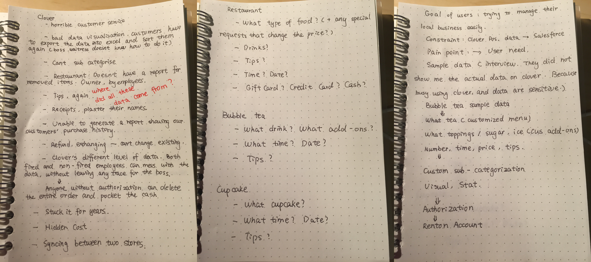
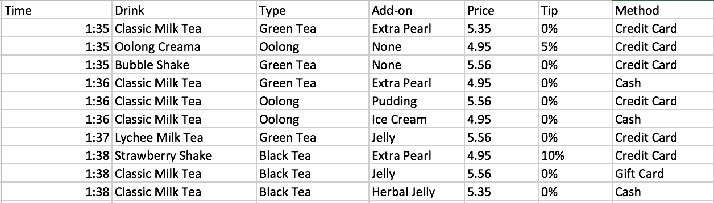
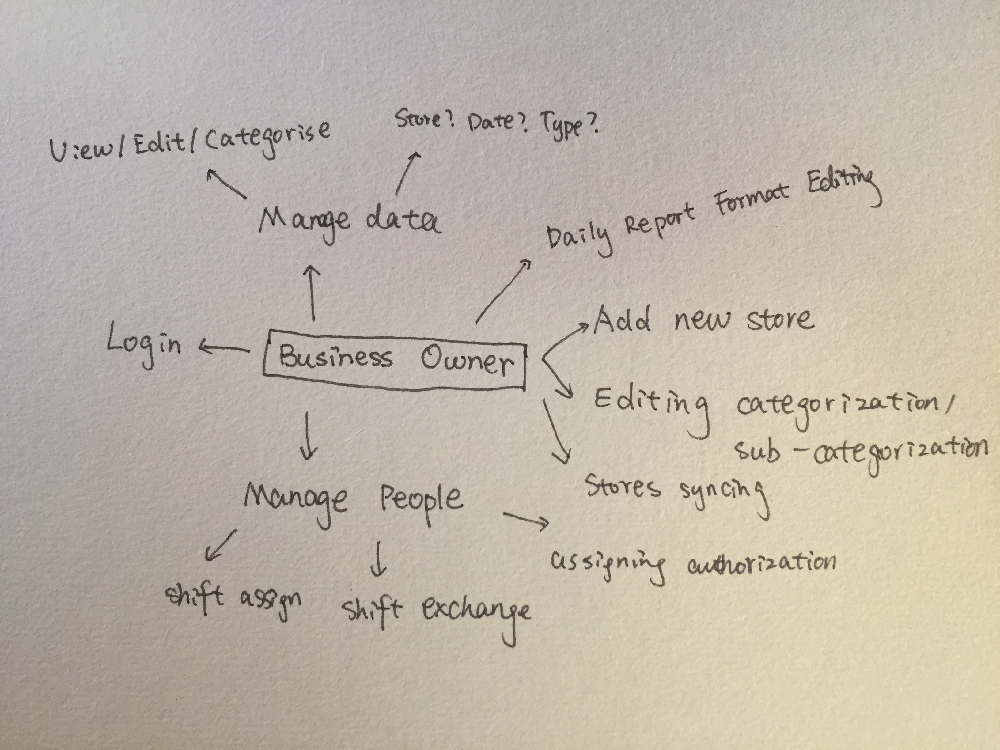
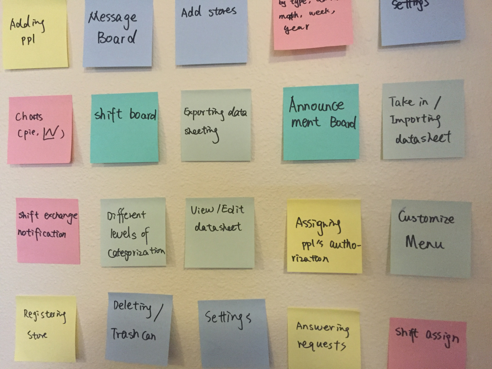
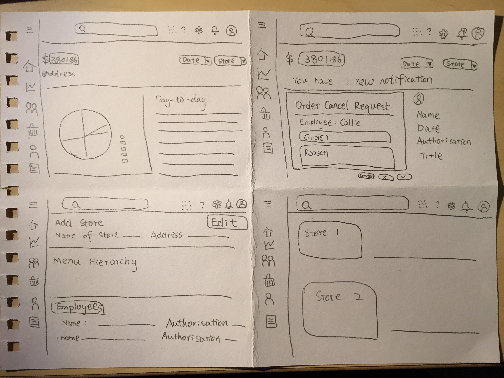
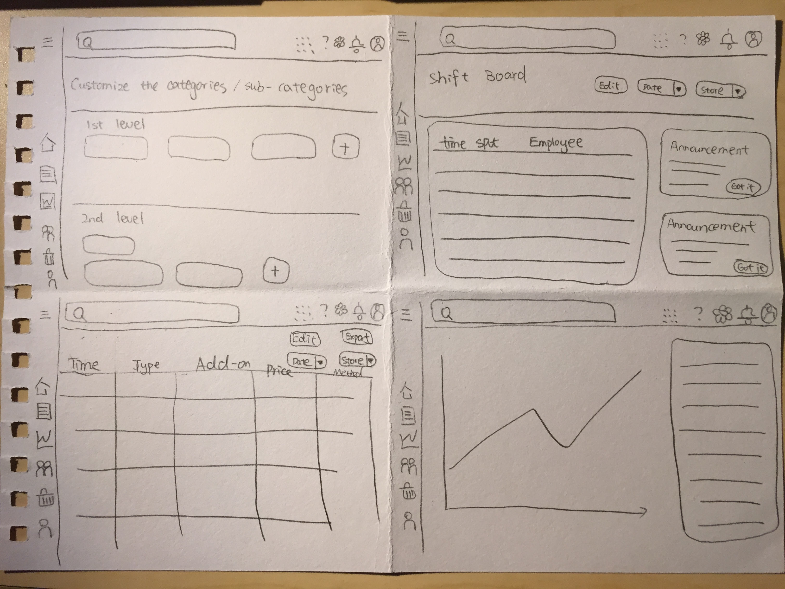
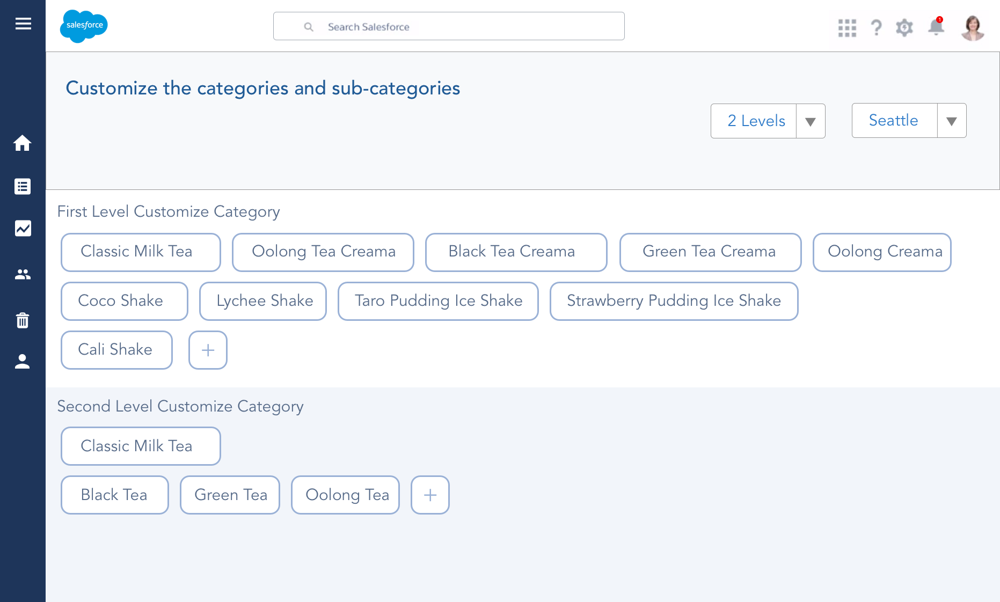
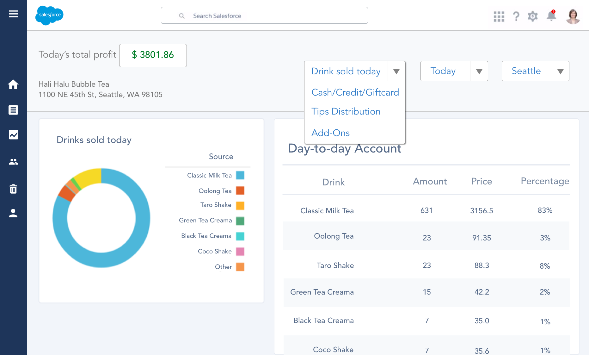
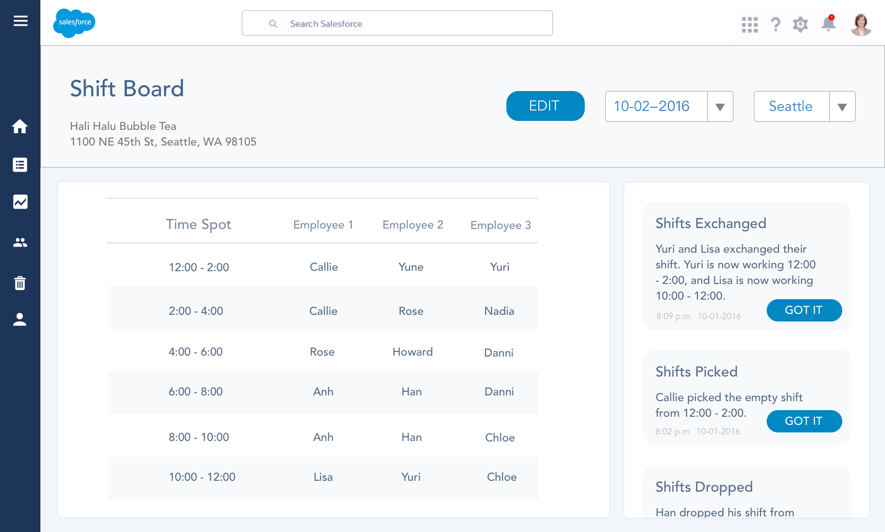
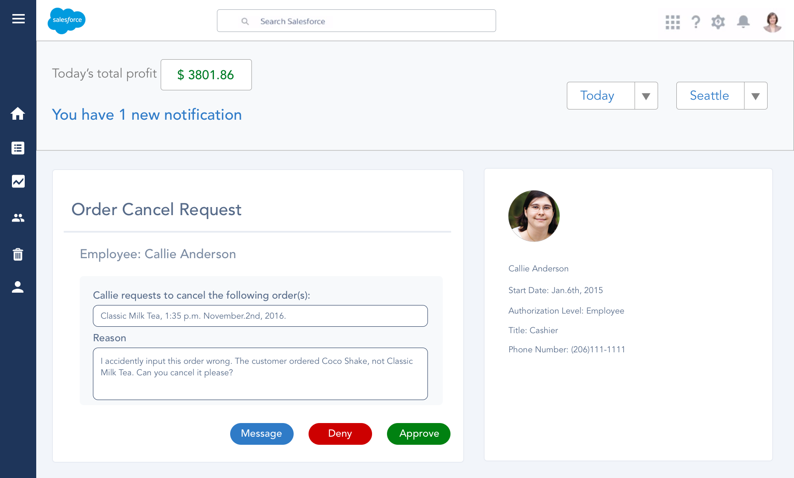

For companies that already have a relatively mature selling process, Salesforce is one excellent tool that helps them manage their business. However, Salesforce’s products have not been serving people who own local business, which provide goods or services to a local population. They have a very different way to manage their data. My design product, Salesforce for local business, is to serve owners of local business.
*This is my personal project. I am not affiliate with Salesforce.
Goal and Target User
Goal
1) Finding out what are pain points of current local business running system
2)Solving the pain points.
Target users
People who own local business.
User Research Process
Before anything, collecting data is the starting point for any user-centered design. I defined local business to be business that do not belong to big chain store, those who serve a local population.
I conducted user research at University Way NE, Seattle, WA 98105, or, as most people call it, the Ave. I chose to conduct user research on the ave, because it is right next to University of Washington, Seattle campus. UW students and faculty members make the Ave rather crowded and popular, which enriches the data for my user research. Also, based on data provided by Yelp, about 70% of all stores on the ave are local business (i.e, stores like Starbucks, 7–11, American Apparel not counted as local business). It makes the Ave a great location for my user research.
Before I went on to the Ave, I decided the best way to get data would be interviewing the business owners and field study (observation). Based on Yelp data, about 80% of all local business stores here are food and dining services (i.e., restaurants, dessert stores, cafe). So I picked several food service local business owners to interview. I went on the Ave, stayed there from 2 to 5 p.m on weekdays, because that’s when most of the stores are not busy. In the end, I successfully conducted 4 interview sessions with 2 restaurants owners , 1 bubble store owner and 1 cup cake store owner.
 Some notes and data analysisAfter finishing my very first interview with a restaurant owner, I got to know that they a product called Clover. According to the owner, that is now what most people use in local business. So I Googled clover, did some competitive analysis, before I move on to the second interview.
By the end of the four interviews, I realized the information my interviewees can provide start to get more and more repetitive, and that is when I know that I can stop on user research and start analyse my data.
During the interview process, I was so tempted to conduct more field study, where I observe how owners run their business. However, their actual business data are too sensitive for them to show me. I ended up conducting one field study at the bubble tea store, while it was crowded and busy, and I got the chance to see how customers and cashiers interact with Clover and data involved.
Pain points
I collected and analysed data from interviews, field study and competitive analysis. I then generated these five pain points:
1. Anyone can access and edit data
Authorization is a big issue in the current local business managing system, AKA Clove. A restaurant owner reported in interview that anyone who log into the system can input, edit or delete any order. He described a former employee of his delete some of the orders and stole the money, and he can still edit data on Clove after he’s fired. Clover, however, never reported any of it.
“We fired him because he was deleting orders and taking the money. Now he is not working for us anymore and yet he can still log into the system to change whatever he wants. And Clove never report it!”
2. Useless categorization and visualization
According to the owner of bubble tea store and the owner of cupcake store, data in Clove system is hard to manage. All the data appear to be categorized by time. However, the owners would love to see the data categorized by type of drink/cupcake or others. Visualized chart, on the scale of time/date is not so helpful.
3. No customize categorization or sub-categorization
Unable to customize categorization and sub-categorization is extremely inconvenient. For local business owner, the items they sell are customizable. For example, bubble tea customers can add extra servings of tapioca or herbal jelly, restaurant customers might order dish with extra meat. These data are important to owners, and yet the current system, Clove, fail to create sub-categorization for them.
4. Have to manually input tips
Restaurant owners have to manually input the amount of tip per order every night. It takes quite long time.
“It is tedious to input manually tips at the end of the day.”
However, I believe, instead of being a design problem, this is a bank policy issue. Bank does not charge tips from credit/debit card unless seeing signature of customers. Therefore, these number have to be provided to the bank afterwards.
5. Data don’t sync between two stores
Local business, though only serves local residents, still has the chance of expanding the business to other region. The bubble tea owner reported that syncing.
“I have another bubble tea shop at Renton, and the data just don’t sync. ”
The owner now pays for two different account of clover. He has to check and analyze data from one store, then do exactly the same thing to the other. It takes time and extra calculation to add everything together using a calculator.
User Needs
I generated user needs based on users’ pain points. Also, I did not treat the manually-tips-inputing as a design problem, since it’s a problem because of bank policy.
Different Authorisation level
One way to solve the data access/editing problem is to have different authorization of one account. For example, the owner has the highest authorisation level, where he/she gets to see all the on-time sales data, shifts, and orders, and authorizing employees to edit sales data.
Customised data management
Local Business owners need to customize data based on different type of items they sell. Customizable data categorization and sub-categorization is important.
Able to sync among multiple (usually 2) stores
Data from more than one store should be able to sync and analyzed together.
Able to manage data and also people
This user need is based on my field study. I observe that these local business often run on owners assigning shifts and employees dropping and picking up shifts. It is a critical process of running the business, so I take it as a user need as well.
Sample Data
The data below came from interview + field study with at the bubble tea store. The owner did not show me the actual data. He only listed the types of data for me, because the actual number is a sensitive subject. I then stayed in the store for another half an hour after the interview to conduct field study, observing and documenting the data involved.
 Sample Data from the bubble tea storeFrom the sample data, I was able to brainstorm and define key path.
Key Path
 Key Path of local business owners using the productBrainstorm
I then started brainstorming the features and tools local business owners need based on the key path above. I wrote down one idea on one post-it and combined them with key path.
 Brainstorming post-itsSketches
I chose to design on web app platform, because when owners are running the store, it is unlikely for them to check the data online. They prefer to check everything at the end of the day, where they can take close look to the data. My interviewees reported so, that they do it on their own computer.
 BInformation Architecture + Low fidelity UI  BInformation Architecture + Low fidelity UIThe design above solves the design pain points listed. Authorization are customizable by store owners. When employees try to edit sales data, they need to request the action and owners can either approve, disapprove or message the employees.
Data management and categorization/sub-categorization are all customizable, where owners get to view the data on scale of time, date, type, add-on, and more.
Owner can only register for one account, and manage multiple stores, where data are generated together. Besides manage data, owners can manage people by assigning shifts to employees, and employees can drop and pick up shift through the product under owner’s aware.
Prototype
I made some high fidelity prototypes here to deliver the user interface design idea.
   Constraints
Clover is a pos machine that takes in data from each transaction. So far, there is no way to connect Salesforce products with Clover. In other words, data that are in Clover system cannot be transferred into Salesforce system. Therefore, my design is based on an assumption that Salesforce products are able to access those transaction data in Clover.
Also, ideally, this should be a pretty big product. As a college student, I am not able to get all the data I need. I only reached the data I could access, tried my best to design it out. I did not conduct any usability test either, because it is difficult for me to recruit participants.